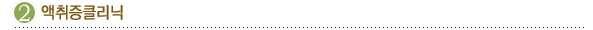
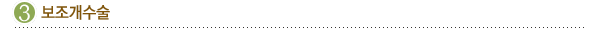

흉터교정술은 흉터가 길고 좁은 경우에 효과가 높습니다. 시술은 먼저 흉터가 위치한
부위의 주름살의
방향과 일치하게 W-성형술로 흉터를 제거한 후 다시 잘 봉합하여 정상적인 피부가 모아져서
붙도록 합니다. 이렇게 봉합된 피부는 아주 안보이진 않지만 예전 흉터보다는 흉한 정도가
덜 해 집니다.
대개 수술 후 6 개월 정도가 지나면 약간 발그스름하던 수술 자리가 살색으로 돌아오면서
희미해지며,
그 후 몇 달이 지나면 수술 자국이 거의 보이지 않게 됩니다.

액취증은 양쪽 겨드랑이에서 정상적인 채취 이상의 냄새가 나는 것을 말합니다. 사람들은
누구에게나
몸에서 특유한 체취를 발산하지만 대부분은 아주 미약하여 남들이 알아차리지 못할 정도입니다.
그러나 어떤 이에게서는 남이 쉽게 알아차리고 그 강도가 지나쳐서 역겨움까지 일으키기도
합니다.
동물들은 이 냄새로 서로를 구분하기도 합니다. 주로 겨드랑이, 젖꼭지, 배꼽, 생식기
주위에 분포해
있는 아포크린 샘에서 분비되는 땀에서는 시큼한 냄새가 나고 약간의 지방산이 들어있습니다.
이 지방산이 주위의 세균에 의해 염증을 일으킬 때 암모니아 같은 강한 냄새가 풍기는 것입니다.
액취증은 남녀 모두에게 너무도 떨쳐버리고 싶은 질환 입니다.
수술가이드
수술시간 : 1시간

보조개는 얼굴을 움직일 때 사용하는 근육 중에서 웃을 때 주로 작용하는 소근(Risorius
muscle)이라는
근육이 수축하면서 뺨 아래쪽 피부가 움푹 들어가는 예쁜 모양을 말합니다. 알맞은 보조개의
위치는
얼굴에 따라 다르겠지만 입술 끝의 수평 연장선과 까만 눈동자의 외각에서 아래로 그어 내린
수직선이
서로 만나는 점이 가장 자연스럽다고 합니다.
수술 방법은 국소마취 후 입 안의 구강 점막을 약 5 mm 정도 절개하고 봉합사로 얼굴
피부 밑의 조직과
함께 묶어 주는 것입니다. 또한 확실한 보조개를 원하시는 경우에는, 구강 점막을 일부
잘라내면서
점막 밑 지방 조직도 함께 제거하여, 움푹 파인 보조개를 만들 수 있습니다.
수술 시간은 한 쪽에 약 10 분 정도 소요됩니다. 수술 후 처음에는 웃지 않고 가만히
계셔도 보조개가
깊숙이 잡혀 부자연스럽지만 2~3 개월 후부터는 웃을 때만 보조개가 만들어져 자연스러워집니다.